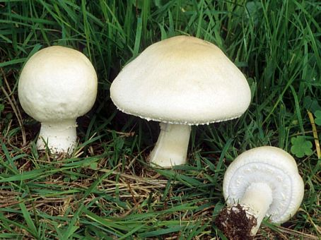
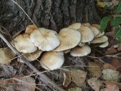
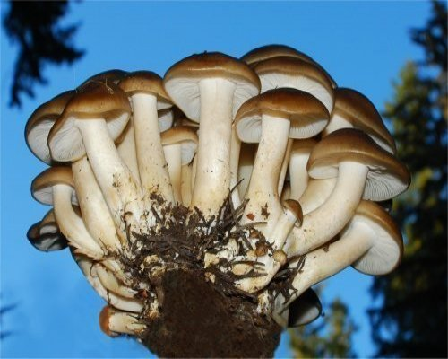
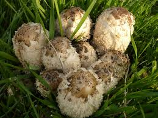
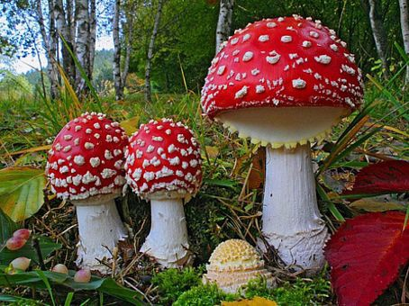
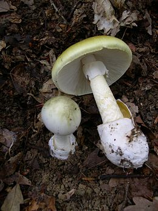
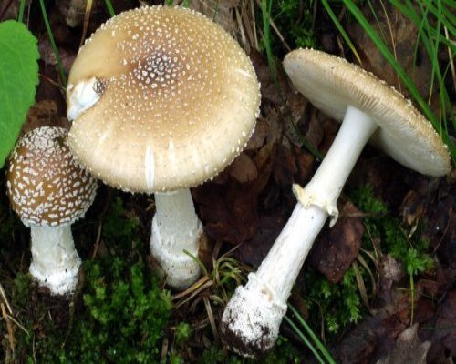
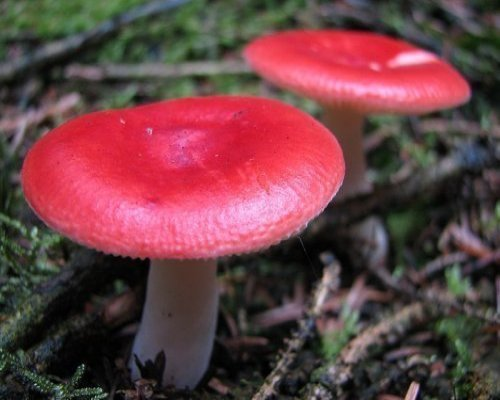

|  |  |  |  |
Nagyon sokan nincsenek tisztában azzal, hogy rengeteg fajta gomba létezik. Emellet, sokan nem tudják, hogy vannak olyan fajták, melyeket jóízűen el lehet fogyasztani, és sok helyen igen közkedveltek. Persze vannak mérgező fajták, melyekkel vigyáznunk kell, és nem mindegyik jó izű. Viszont, az én célom az, hogy bemutassam a különböző fajtákat, és megmutassan, melyeket érdemes fogyasztani.
|  |  |  |  |
Természetesen, ha például valakitől kapunk gombát, akiben megbízunk, és ő tudja, hogy fogyasztható, akkor rendben van. Ha viszont mi magunk szedtük, nem elég az, hogy "talán ilyen fajta", lehetnek más, nagyon hasonló gombák is.
A gombagyűjtésnek vannak bizonyos szabályai, például, ha azt akarjuk, hogy legközelebb is teremjen gomba egy bizonyos helyen, akkor nem szabad begyűjteni az összeset, mindig hagyjunk ott valamennyit. Ne szedjük le az öreg, vagy a túl fiatal példányokat. A fiatallal érdemes várni, a túl öregeket pedig gyakran már nem éri meg elfogyasztani. Azt is figyelembe kell venni, hogy milyen helyen terem a gomba. Például ne szedjünk olyan területről, amely vegyszerrel volt kezelve, vagy olyan helyekről, ahol különböző szennyeződések lehetnek, például kipufogógáz. Egyéb információkat a gombagyűjtésről, és az elkészítésről a Szabályok menüpont alatt találhat, ezekről is érdemes olvasni.
A fenti Képek menüre kattintva rengeteg képet láthat különböző fajta gombákról, és ha talált gombát, de nem tudja, milyen fajta, a képek segítségével könnyebben azonosíthatja.
Ha információra van szüksége bizonyos fajta gombáról, a fenti Fajták menüre kattintva elolvashatja, mikor és hol lehet általában megtalálni, hogy fogyasztható-e, és egyéb információkat.
Mindig örülök, amikor valahol meglátok egy ízletes fajta gombát, szívesen elkészítem, vagy valaki más a családból, és aztán jót eszünk belőle. Több féle módon el lehet készíteni, sok helyen lehet találni gombás recepteket. Itt egy példa arra, milyen jó a csiperke. Remélem, minél többen megszeretik a gombákat!